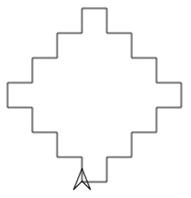
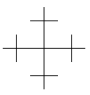

An abstraction is a general concept or idea, rather than something concrete or tangible. In computer science, abstraction reduces complexity by removing unnecessary information.
How is the use of a function an example of abstraction?
In the previous lesson we wrote a program that used layers of functions, functions that call other functions, to get the turtle to draw this diamond-shaped figure.
The function drawDiamond() is an abstraction. If you want to draw a diamond, you just call it. You do not need to know how it does the job, only that the turtle will draw a diamond where it is sitting.

You may have noticed that drawing the diamond actually ran more instructions than it would have taken as a plain list of moveForward() and turnLeft() commands.
Every function call is another instruction the program has to run, on top of the instructions that actually draw the diamond. That leads to a question…
Imagine two programs that both drew the diamond figure. One uses functions. The other is just a long sequence of the turtle’s primitive commands. Which program is more efficient? Make an argument for why one is more efficient than the other.
Efficiency is interesting to think about, but functions also let us leverage the power of abstraction. When we write a function, it solves a small piece of a bigger problem.
Having that small problem solved lets us ignore its details and focus on the bigger tasks. Keep that in mind as we look at the worksheet.
Read through the first page with your partner, then discuss the top-down design process. Question 1 gives you 5 minutes to read plus time to answer; questions 2 and 3 give you one minute each.
With your partner, think through how you would program this shape. Write down the names of the functions you would use, all the way down to the last function that would just be simple turtle commands.
Then compare with another group. Is your plan better than theirs?

Complete dots 2 and 3 as efficiently as possible with your partner. Complete dots 4 through 7 on your own.
For dot 4:
iterative means repetitive: doing something over and over.
incremental means in small parts.
An iterative and incremental process adds a small part, tests it, then adds the next small part, over and over.
Controls the keyboard and the mouse, and types the code.
Keeps track of the big picture and guides the driver toward the goal.
Swap roles often so both partners spend time driving and navigating.
In the top right corner, click your name.
Click “Pair Programming.”
Choose your partner’s name.
Alternate driver and navigator roles as you work.
Make sure to Run and click Finish when you complete each level. This gives the navigator a copy of your work too.
When we layer functions, with functions that call other functions, we are creating layers of abstraction. This is how we design and build increasingly complex systems.
We have seen layers of abstraction before: in the design of Internet protocols and in the binary encoding of information.
Solving a fundamental piece of a problem that can be reliably reused in a different context frees us to think about harder problems. We can trust the solved piece and stop worrying about its details.
Solving how to send a single bit from one place to another makes it easier to think about sending numbers, text, or images, to many people, over networks, in packets, and so on.
Where else in your life have you seen layers of abstraction? Connect the idea to some other activity in your life and post it below.